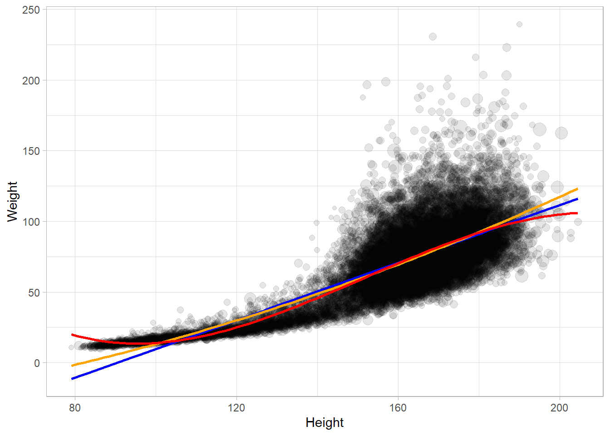

data(api, package = "survey")9 Analysis
This section shows how to use the survey and srvyr packages to analyze complex survey data. “Complex” surveys are those with stratification and/or clustering. The packages handles weights, and adjusts statistical tests for the survey design.
9.1 Prepare the Data
The design object specifies the sampling design, weights, and other information. We’ll work with six datasets.
The survey package includes the Student performance in California schools data, api, a record of the Academic Performance Index based on standardized testing. api contains three datasets that illustrate design types.
apisrsis a simple random sample of (n = 200) schools,apistratis stratified sample of 3 school types (elementary, middle, high) with simple random sampling of different sizes in each stratum,apiclus2is a two-stage cluster sample of schools within districts.
Next is the American National Election Studies (ANES) dataset from the srvyrexploR package. It contain election surveys from 2020, anes_2020. anes_2020 is weighted to the sample, not the population. To make population inferences, ANES recommends using the Current Population Survey (CPS) to scale the weights up to the number of non-institutional U.S. citizens aged 18 or older living in the 50 U.S. states or D.C. in March 2020.1
data(anes_2020, package = "srvyrexploR")
# Mar 2020, state-level population estimates.
cps_state <- censusapi::getCensus(
name = "cps/basic/mar",
vintage = 2020,
region = "state",
vars = c(
"HRMONTH", "HRYEAR4", # month and year of interview
"PRTAGE", "PRCITSHP", # age and citizenship
"PWSSWGT" # final person-level weight.
),
key = Sys.getenv("CENSUS_KEY")
)
# Age 18+ with U.S. citizenship.
target_pop <-
cps_state |>
mutate(across(everything(), as.numeric)) |>
filter(PRTAGE >= 18, PRCITSHP %in% c(1:4)) |>
pull(PWSSWGT) |>
sum()
# Scale the individual person weights to the population of interest.
anes <- anes_2020 |> mutate(Weight = V200010b / sum(V200010b) * target_pop)anes_2020 contains 7,453 rows. Because of stratification, the rows are weighted to account for over/under representation. Column V200010b is the full sample weight and ranges from 0.008 to 6.651 with a sum of 7,453. The last line of code scales the weights so that they sum to the CPS population value, 231,034,125.
Next is the Residential Energy Consumption Survey (RECS) dataset, recs_2020. RECS is a study that measures energy consumption and expenditure in American households.
data(recs_2020, package = "srvyrexploR")Last is the National Health and Nutrition Examination Survey (NHANES). The survey collected 78 attributes from (n = 20,293) persons.
data(NHANESraw, package = "NHANES")
# correction to weights
NHANESraw <- NHANESraw |> mutate(WTMEC4YR = WTMEC2YR / 2) 9.2 Create the Design Object
Most analysis is performed on a tbl_svy survey design object. You can use survey::svydesign() or the srvyr::as_survey_design() wrapper function. The srvyr package is usually preferable because it was designed with tidy principles.
There are two parameters in srvyr::as_survey_design() that reference columns in the data frame.
Population weights,
weights.For an SRS design, the responses are equally weighted, so the column values should just be the population size divided by the sample size.
For a stratified design, the values should equal the sampled fraction of the strata population.
Finite population correction,
fpc. The FPC reduces the variance when a substantial fraction of the total population has been sampled. Set it to the stratum population size.SRS has no strata, so the column values should just be the population size.
Stratified designs should use the stratum population.
apisrs is a simple random sample of 200 schools from a population of 6,194 California schools. FPC column fpc all equal 6,194. Weights column pw all equal 6,194 / 200 = 30.97.
apisrs |> count(pw, fpc) |> knitr::kable()| pw | fpc | n |
|---|---|---|
| 30.97 | 6194 | 200 |
apisrs_des <- as_survey_design(apisrs, weights = pw, fpc = fpc)
summary(apisrs_des)Independent Sampling design
Called via srvyr
Probabilities:
Min. 1st Qu. Median Mean 3rd Qu. Max.
0.03229 0.03229 0.03229 0.03229 0.03229 0.03229
Population size (PSUs): 6194
Data variables:
[1] "cds" "stype" "name" "sname" "snum" "dname"
[7] "dnum" "cname" "cnum" "flag" "pcttest" "api00"
[13] "api99" "target" "growth" "sch.wide" "comp.imp" "both"
[19] "awards" "meals" "ell" "yr.rnd" "mobility" "acs.k3"
[25] "acs.46" "acs.core" "pct.resp" "not.hsg" "hsg" "some.col"
[31] "col.grad" "grad.sch" "avg.ed" "full" "emer" "enroll"
[37] "api.stu" "pw" "fpc" apistrat is stratified on school type (stype): E = Elementary, M = Middle, and H = High School. Samples of 100/4421 (E), 50/1018 = (M), and 50/755 (H) determine the population weights, pw = fpc / n. Stratified designs require the strata parameter.
apistrat |>
count(stype, pw, fpc) |>
mutate(`pw*n` = pw * n) |>
adorn_totals(,,,, -pw) |>
knitr::kable()| stype | pw | fpc | n | pw*n |
|---|---|---|---|---|
| E | 44.2099990844727 | 4421 | 100 | 4421 |
| H | 15.1000003814697 | 755 | 50 | 755 |
| M | 20.3600006103516 | 1018 | 50 | 1018 |
| Total | - | 6194 | 200 | 6194 |
apistrat_des <- as_survey_design(apistrat, weights = pw, fpc = fpc, strata = stype)
summary(apistrat_des)Stratified Independent Sampling design
Called via srvyr
Probabilities:
Min. 1st Qu. Median Mean 3rd Qu. Max.
0.02262 0.02262 0.03587 0.04014 0.05339 0.06623
Stratum Sizes:
E H M
obs 100 50 50
design.PSU 100 50 50
actual.PSU 100 50 50
Population stratum sizes (PSUs):
E H M
4421 755 1018
Data variables:
[1] "cds" "stype" "name" "sname" "snum" "dname"
[7] "dnum" "cname" "cnum" "flag" "pcttest" "api00"
[13] "api99" "target" "growth" "sch.wide" "comp.imp" "both"
[19] "awards" "meals" "ell" "yr.rnd" "mobility" "acs.k3"
[25] "acs.46" "acs.core" "pct.resp" "not.hsg" "hsg" "some.col"
[31] "col.grad" "grad.sch" "avg.ed" "full" "emer" "enroll"
[37] "api.stu" "pw" "fpc" apiclus2 is a two-level cluster design. First, 40 school districts (id dnum) were randomly selected from the 755 districts in the state (fpc1 = 757). Then a random sample of up to 5 schools (id snum) were sampled from the fpc2 schools in the districts. Clustered designs require the cluster ids from largest to smallest level. pw = fpc1 / 40.
apiclus2 |> count(dnum, snum, pw, fpc1, fpc2) |>
adorn_totals(,,,,,n) |> DT::datatable()apiclus_design <- svydesign(
id = ~dnum + snum, # district id + school id
data = apiclus2,
weights = ~pw,
fpc = ~fpc1 + fpc2 # districts in state + schools in district
)
summary(apiclus_design)2 - level Cluster Sampling design
With (40, 126) clusters.
svydesign(id = ~dnum + snum, data = apiclus2, weights = ~pw,
fpc = ~fpc1 + fpc2)
Probabilities:
Min. 1st Qu. Median Mean 3rd Qu. Max.
0.003669 0.037743 0.052840 0.042390 0.052840 0.052840
Population size (PSUs): 757
Data variables:
[1] "cds" "stype" "name" "sname" "snum" "dname"
[7] "dnum" "cname" "cnum" "flag" "pcttest" "api00"
[13] "api99" "target" "growth" "sch.wide" "comp.imp" "both"
[19] "awards" "meals" "ell" "yr.rnd" "mobility" "acs.k3"
[25] "acs.46" "acs.core" "pct.resp" "not.hsg" "hsg" "some.col"
[31] "col.grad" "grad.sch" "avg.ed" "full" "emer" "enroll"
[37] "api.stu" "pw" "fpc1" "fpc2" Set nest=TRUE to nest clusters within the strata.
anes_des <- as_survey_design(
anes,
weights = Weight,
strata = V200010d,
ids = V200010c,
nest = TRUE
)
anes_desStratified 1 - level Cluster Sampling design (with replacement)
With (101) clusters.
Called via srvyr
Sampling variables:
- ids: V200010c
- strata: V200010d
- weights: Weight
Data variables:
- V200001 (dbl), CaseID (dbl), V200002 (hvn_lbll), InterviewMode (fct),
V200010b (dbl), Weight (dbl), V200010c (dbl), VarUnit (fct), V200010d
(dbl), Stratum (fct), V201006 (hvn_lbll), CampaignInterest (fct), V201023
(hvn_lbll), EarlyVote2020 (fct), V201024 (hvn_lbll), V201025x (hvn_lbll),
V201028 (hvn_lbll), V201029 (hvn_lbll), V201101 (hvn_lbll), V201102
(hvn_lbll), VotedPres2016 (fct), V201103 (hvn_lbll),
VotedPres2016_selection (fct), V201228 (hvn_lbll), V201229 (hvn_lbll),
V201230 (hvn_lbll), V201231x (hvn_lbll), PartyID (fct), V201233 (hvn_lbll),
TrustGovernment (fct), V201237 (hvn_lbll), TrustPeople (fct), V201507x
(hvn_lbll), Age (dbl), AgeGroup (fct), V201510 (hvn_lbll), Education (fct),
V201546 (hvn_lbll), V201547a (hvn_lbll), V201547b (hvn_lbll), V201547c
(hvn_lbll), V201547d (hvn_lbll), V201547e (hvn_lbll), V201547z (hvn_lbll),
V201549x (hvn_lbll), RaceEth (fct), V201600 (hvn_lbll), Gender (fct),
V201607 (hvn_lbll), V201610 (hvn_lbll), V201611 (hvn_lbll), V201613
(hvn_lbll), V201615 (hvn_lbll), V201616 (hvn_lbll), V201617x (hvn_lbll),
Income (fct), Income7 (fct), V202051 (hvn_lbll), V202066 (hvn_lbll),
V202072 (hvn_lbll), VotedPres2020 (fct), V202073 (hvn_lbll), V202109x
(hvn_lbll), V202110x (hvn_lbll), VotedPres2020_selection (fct)recs_des <- as_survey_rep(
recs_2020,
weights = NWEIGHT,
repweights = NWEIGHT1:NWEIGHT60,
type = "JK1",
scale = 59 / 60,
mse = TRUE
)
recs_desCall: Called via srvyr
Unstratified cluster jacknife (JK1) with 60 replicates and MSE variances.
Sampling variables:
- repweights: `NWEIGHT1 + NWEIGHT2 + NWEIGHT3 + NWEIGHT4 + NWEIGHT5 +
NWEIGHT6 + NWEIGHT7 + NWEIGHT8 + NWEIGHT9 + NWEIGHT10 + NWEIGHT11 +
NWEIGHT12 + NWEIGHT13 + NWEIGHT14 + NWEIGHT15 + NWEIGHT16 + NWEIGHT17 +
NWEIGHT18 + NWEIGHT19 + NWEIGHT20 + NWEIGHT21 + NWEIGHT22 + NWEIGHT23 +
NWEIGHT24 + NWEIGHT25 + NWEIGHT26 + NWEIGHT27 + NWEIGHT28 + NWEIGHT29 +
NWEIGHT30 + NWEIGHT31 + NWEIGHT32 + NWEIGHT33 + NWEIGHT34 + NWEIGHT35 +
NWEIGHT36 + NWEIGHT37 + NWEIGHT38 + NWEIGHT39 + NWEIGHT40 + NWEIGHT41 +
NWEIGHT42 + NWEIGHT43 + NWEIGHT44 + NWEIGHT45 + NWEIGHT46 + NWEIGHT47 +
NWEIGHT48 + NWEIGHT49 + NWEIGHT50 + NWEIGHT51 + NWEIGHT52 + NWEIGHT53 +
NWEIGHT54 + NWEIGHT55 + NWEIGHT56 + NWEIGHT57 + NWEIGHT58 + NWEIGHT59 +
NWEIGHT60`
- weights: NWEIGHT
Data variables:
- DOEID (dbl), ClimateRegion_BA (fct), Urbanicity (fct), Region (fct),
REGIONC (chr), Division (fct), STATE_FIPS (chr), state_postal (fct),
state_name (fct), HDD65 (dbl), CDD65 (dbl), HDD30YR (dbl), CDD30YR (dbl),
HousingUnitType (fct), YearMade (ord), TOTSQFT_EN (dbl), TOTHSQFT (dbl),
TOTCSQFT (dbl), SpaceHeatingUsed (lgl), ACUsed (lgl), HeatingBehavior
(fct), WinterTempDay (dbl), WinterTempAway (dbl), WinterTempNight (dbl),
ACBehavior (fct), SummerTempDay (dbl), SummerTempAway (dbl),
SummerTempNight (dbl), NWEIGHT (dbl), NWEIGHT1 (dbl), NWEIGHT2 (dbl),
NWEIGHT3 (dbl), NWEIGHT4 (dbl), NWEIGHT5 (dbl), NWEIGHT6 (dbl), NWEIGHT7
(dbl), NWEIGHT8 (dbl), NWEIGHT9 (dbl), NWEIGHT10 (dbl), NWEIGHT11 (dbl),
NWEIGHT12 (dbl), NWEIGHT13 (dbl), NWEIGHT14 (dbl), NWEIGHT15 (dbl),
NWEIGHT16 (dbl), NWEIGHT17 (dbl), NWEIGHT18 (dbl), NWEIGHT19 (dbl),
NWEIGHT20 (dbl), NWEIGHT21 (dbl), NWEIGHT22 (dbl), NWEIGHT23 (dbl),
NWEIGHT24 (dbl), NWEIGHT25 (dbl), NWEIGHT26 (dbl), NWEIGHT27 (dbl),
NWEIGHT28 (dbl), NWEIGHT29 (dbl), NWEIGHT30 (dbl), NWEIGHT31 (dbl),
NWEIGHT32 (dbl), NWEIGHT33 (dbl), NWEIGHT34 (dbl), NWEIGHT35 (dbl),
NWEIGHT36 (dbl), NWEIGHT37 (dbl), NWEIGHT38 (dbl), NWEIGHT39 (dbl),
NWEIGHT40 (dbl), NWEIGHT41 (dbl), NWEIGHT42 (dbl), NWEIGHT43 (dbl),
NWEIGHT44 (dbl), NWEIGHT45 (dbl), NWEIGHT46 (dbl), NWEIGHT47 (dbl),
NWEIGHT48 (dbl), NWEIGHT49 (dbl), NWEIGHT50 (dbl), NWEIGHT51 (dbl),
NWEIGHT52 (dbl), NWEIGHT53 (dbl), NWEIGHT54 (dbl), NWEIGHT55 (dbl),
NWEIGHT56 (dbl), NWEIGHT57 (dbl), NWEIGHT58 (dbl), NWEIGHT59 (dbl),
NWEIGHT60 (dbl), BTUEL (dbl), DOLLAREL (dbl), BTUNG (dbl), DOLLARNG (dbl),
BTULP (dbl), DOLLARLP (dbl), BTUFO (dbl), DOLLARFO (dbl), BTUWOOD (dbl),
TOTALBTU (dbl), TOTALDOL (dbl)The survey used a 4-stage design: stage 0 stratified the US by geography and proportion of minority populations; stage 1 randomly selected counties within strata; stage 2 randomly selected city blocks within counties; stage 3 randomly selected households within city blocks; and stage 4 randomly selected persons within households. When there are multiple levels of clusters like this, the convention is to assign the first cluster to ids. Set nest = TRUE because the cluster ids are nested within the strata (i.e., they are not unique).
nhanes_des <- as_survey_design(
NHANESraw,
strata = SDMVSTRA,
ids = SDMVPSU,
nest = TRUE,
weights = WTMEC4YR
)
summary(nhanes_des)Stratified 1 - level Cluster Sampling design (with replacement)
With (62) clusters.
Called via srvyr
Probabilities:
Min. 1st Qu. Median Mean 3rd Qu. Max.
8.986e-06 5.664e-05 1.054e-04 Inf 1.721e-04 Inf
Stratum Sizes:
75 76 77 78 79 80 81 82 83 84 85 86 87 88 89 90 91
obs 803 785 823 829 696 751 696 724 713 683 592 946 598 647 251 862 998
design.PSU 2 2 2 2 2 2 2 2 2 2 2 3 2 2 2 3 3
actual.PSU 2 2 2 2 2 2 2 2 2 2 2 3 2 2 2 3 3
92 93 94 95 96 97 98 99 100 101 102 103
obs 875 602 688 722 676 608 708 682 700 715 624 296
design.PSU 3 2 2 2 2 2 2 2 2 2 2 2
actual.PSU 3 2 2 2 2 2 2 2 2 2 2 2
Data variables:
[1] "ID" "SurveyYr" "Gender" "Age"
[5] "AgeMonths" "Race1" "Race3" "Education"
[9] "MaritalStatus" "HHIncome" "HHIncomeMid" "Poverty"
[13] "HomeRooms" "HomeOwn" "Work" "Weight"
[17] "Length" "HeadCirc" "Height" "BMI"
[21] "BMICatUnder20yrs" "BMI_WHO" "Pulse" "BPSysAve"
[25] "BPDiaAve" "BPSys1" "BPDia1" "BPSys2"
[29] "BPDia2" "BPSys3" "BPDia3" "Testosterone"
[33] "DirectChol" "TotChol" "UrineVol1" "UrineFlow1"
[37] "UrineVol2" "UrineFlow2" "Diabetes" "DiabetesAge"
[41] "HealthGen" "DaysPhysHlthBad" "DaysMentHlthBad" "LittleInterest"
[45] "Depressed" "nPregnancies" "nBabies" "Age1stBaby"
[49] "SleepHrsNight" "SleepTrouble" "PhysActive" "PhysActiveDays"
[53] "TVHrsDay" "CompHrsDay" "TVHrsDayChild" "CompHrsDayChild"
[57] "Alcohol12PlusYr" "AlcoholDay" "AlcoholYear" "SmokeNow"
[61] "Smoke100" "SmokeAge" "Marijuana" "AgeFirstMarij"
[65] "RegularMarij" "AgeRegMarij" "HardDrugs" "SexEver"
[69] "SexAge" "SexNumPartnLife" "SexNumPartYear" "SameSex"
[73] "SexOrientation" "WTINT2YR" "WTMEC2YR" "SDMVPSU"
[77] "SDMVSTRA" "PregnantNow" "WTMEC4YR" Survey weights for minorities are typically lower because designers over-sample to get adequate representation. The weights sum to the sub-populations and the total population. I.e., WTMEC4YR = sub population size / sample size.
NHANESraw |>
summarize(.by = Race1,
`Sum(WTMEC4YR)` = sum(WTMEC4YR),
`Avg(WTMEC4YR)` = mean(WTMEC4YR),
n = n()) |>
mutate(`Avg * n` = `Avg(WTMEC4YR)` * n) |>
janitor::adorn_totals() |>
gt::gt() |>
gt::fmt_number(decimals = 0)| Race1 | Sum(WTMEC4YR) | Avg(WTMEC4YR) | n | Avg * n |
|---|---|---|---|---|
| White | 193,966,274 | 26,236 | 7,393 | 193,966,274 |
| Other | 23,389,002 | 10,116 | 2,312 | 23,389,002 |
| Black | 37,241,616 | 8,026 | 4,640 | 37,241,616 |
| Mexican | 30,719,158 | 8,216 | 3,739 | 30,719,158 |
| Hispanic | 18,951,150 | 8,579 | 2,209 | 18,951,150 |
| Total | 304,267,200 | 61,174 | 20,293 | 304,267,200 |
The survey package functions handle the survey designs and weights. The population figures from the table above could have been built with svytable().
svytable(~Race1, design = nhanes_des) %>%
as.data.frame() %>%
mutate(prop = Freq / sum(Freq) * 100) %>%
arrange(desc(prop)) %>%
adorn_totals() %>%
flextable() %>%
colformat_int(j = 2) %>%
colformat_num(j = 3, suffix = "%", digits = 0)Race1 | Freq | prop |
|---|---|---|
White | 193,966,274 | 63.748664% |
Black | 37,241,616 | 12.239773% |
Mexican | 30,719,158 | 10.096112% |
Other | 23,389,002 | 7.686994% |
Hispanic | 18,951,150 | 6.228456% |
Total | 304,267,200 | 100.000000% |
9.3 Descriptive Analysis
9.3.1 Distributions
Create cross-tabs with survey_count().
apisrs_des |> survey_count(stype)# A tibble: 3 × 3
stype n n_se
<fct> <dbl> <dbl>
1 E 4398. 196.
2 H 774. 143.
3 M 1022. 160.# apisrs |>
# summarize(.by = stype, n = sum(pw), n_se = sd(pw))
# count(Region, Division)9.3.2 Central Tendency
9.3.3 Relationship
9.3.4 Dispersion
Create a contingency table by including two variables in svytable(). Here is contingency table for self-reported health by depression expressed as a 100% stacked bar chart.
svytable(~Depressed + HealthGen, design = nhanes_des) %>%
data.frame() %>%
group_by(HealthGen) %>%
mutate(n_HealthGen = sum(Freq), Prop_Depressed = Freq / sum(Freq)) %>%
ggplot(aes(x = HealthGen, y = Prop_Depressed, fill = Depressed)) +
geom_col() +
coord_flip() +
theme_minimal() +
scale_fill_brewer()Perform a chi-square test of independence on contingency tables using the svychisq() function. Here is a test ofthe null hypothesis that depression is independent of general health.
svychisq(~Depressed + HealthGen, design = nhanes_des, statistic = "Chisq")
Pearson's X^2: Rao & Scott adjustment
data: NextMethod()
X-squared = 1592.7, df = 8, p-value < 2.2e-16The chi-square test with Rao & Scott adjustment is evidently not a standard chi-square test. Maybe in how it factors in survey design? The test statistic is usually \(X^2 = \sum (O - E)^2 / E.\)
O <- svytable(~Depressed + HealthGen, design = nhanes_des) %>% as.matrix()
E <- sum(O) * prop.table(O, 1) * prop.table(O, 2)
(X2 <- sum((O - E)^2 / E))
## [1] 16025254
pchisq(X2, df = (nrow(O)-1) * (ncol(O) - 1), lower.tail = FALSE)
## [1] 0which is what chisq.test() does.
svytable(~Depressed + HealthGen, design = nhanes_des) %>%
as.matrix() %>%
chisq.test()
Pearson's Chi-squared test
data: .
X-squared = 16025254, df = 8, p-value < 2.2e-169.4 Exploring Quantitative Data
The svymean(), svytotal(), and svyquantile() functions summarize quantitative variables. To group by a factor variable, use svyby().
svyquantile(x = ~SleepHrsNight,
design = nhanes_des,
na.rm = TRUE,
quantiles = c(.01, .25, .50, .75, .99))$SleepHrsNight
quantile ci.2.5 ci.97.5 se
0.01 4 4 5 0.2457588
0.25 6 6 7 0.2457588
0.5 7 7 8 0.2457588
0.75 8 8 9 0.2457588
0.99 10 10 11 0.2457588
attr(,"hasci")
[1] TRUE
attr(,"class")
[1] "newsvyquantile"svymean(x = ~SleepHrsNight, design = nhanes_des, na.rm = TRUE) mean SE
SleepHrsNight 6.9292 0.0166svyby(formula = ~SleepHrsNight, by = ~Depressed, FUN = svymean,
design = nhanes_des, na.rm = TRUE, keep.names = FALSE) %>%
ggplot(aes(x = Depressed, y = SleepHrsNight,
ymin = SleepHrsNight - 2*se, ymax = SleepHrsNight + 2*se)) +
geom_col(fill = "lightblue") +
geom_errorbar(width = 0.5)
You need raw data for the distribution plots, so be sure to weight the variables.
NHANESraw %>%
ggplot(aes(x = SleepHrsNight, weight = WTMEC4YR)) +
geom_histogram(binwidth = 1, fill = "lightblue", color = "#FFFFFF", na.rm = TRUE)
NHANESraw %>%
filter(!is.na(SleepHrsNight) & !is.na(Gender)) %>%
group_by(Gender) %>%
mutate(WTMEC4YR_std = WTMEC4YR / sum(WTMEC4YR)) %>%
ggplot(aes(x = SleepHrsNight, Weight = WTMEC4YR_std)) +
geom_density(bw = 0.6, fill = "lightblue") +
labs(x = "Sleep Hours per Night") +
facet_wrap(~Gender, labeller = "label_both")Test whether the population averages differ with a two-sample survey-weighted t-test. Use the svytest() function to incorporate the survey design.
svyttest(formula = SleepHrsNight ~ Gender, design = nhanes_des)
Design-based t-test
data: SleepHrsNight ~ Gender
t = -3.4077, df = 32, p-value = 0.001785
alternative hypothesis: true difference in mean is not equal to 0
95 percent confidence interval:
-0.15506427 -0.03904047
sample estimates:
difference in mean
-0.09705237 9.5 Modeling Quantitative Data
Scatterplots need to adjust for the sampling weights. You can do this with the size or alpha aesthetics.
p1 <- NHANESraw %>%
filter(Age == 20) %>%
ggplot(aes(x = Height, y = Weight, color = Gender, size = WTMEC4YR)) +
geom_jitter(width = 0.3, height = 0, alpha = 0.3) +
guides(size = FALSE) +
theme(legend.position = "top") +
labs(color = "")
p2 <- NHANESraw %>%
filter(Age == 20) %>%
ggplot(aes(x = Height, y = Weight, color = Gender, alpha = WTMEC4YR)) +
geom_jitter(width = 0.3, height = 0) +
guides(alpha = FALSE) +
theme(legend.position = "top") +
labs(color = "")
gridExtra::grid.arrange(p1, p2, nrow = 1)Fit a regression line with geom_smooth().
NHANESraw %>%
filter(!is.na(Weight) & !is.na(Height)) %>%
ggplot(aes(x = Height, y = Weight, size = WTMEC4YR)) +
geom_point(alpha = 0.1) +
geom_smooth(method = "lm", se = FALSE, mapping = aes(weight = WTMEC4YR),
formula = y ~ x, color = "blue") +
geom_smooth(method = "lm", se = FALSE, mapping = aes(weight = WTMEC4YR),
formula = y ~ poly(x, 2), color = "orange") +
geom_smooth(method = "lm", se = FALSE, mapping = aes(weight = WTMEC4YR),
formula = y ~ poly(x, 3), color = "red") +
guides(size = FALSE) 
Model a regression line with svyglm(). Let’s build a model to predict, BPSysAve, a person’s systolic blood pressure reading, using BPDiaAve, a person’s diastolic blood pressure reading and Diabetes, whether or not they were diagnosed with diabetes.
drop_na(NHANESraw, Diabetes, BPDiaAve, BPSysAve) %>%
ggplot(mapping = aes(x = BPDiaAve, y = BPSysAve, size = WTMEC4YR, color = Diabetes)) +
geom_point(alpha = 0.2) +
guides(size = FALSE) +
geom_smooth(method = "lm", formula = y ~ x, se = FALSE, mapping = aes(weight = WTMEC4YR))mod <- svyglm(BPSysAve ~ BPDiaAve*Diabetes, design = nhanes_des)
summary(mod)
Call:
svyglm(formula = BPSysAve ~ BPDiaAve * Diabetes, design = nhanes_des)
Survey design:
Called via srvyr
Coefficients:
Estimate Std. Error t value Pr(>|t|)
(Intercept) 83.58652 2.05537 40.667 < 2e-16 ***
BPDiaAve 0.49964 0.02623 19.047 < 2e-16 ***
DiabetesYes 25.36616 3.56587 7.114 6.53e-08 ***
BPDiaAve:DiabetesYes -0.22132 0.05120 -4.323 0.000156 ***
---
Signif. codes: 0 '***' 0.001 '**' 0.01 '*' 0.05 '.' 0.1 ' ' 1
(Dispersion parameter for gaussian family taken to be 279.1637)
Number of Fisher Scoring iterations: 29.6 Survey Administration
The second phase of a survey analysis is to collect the responses and perform an exploratory data analysis to familiarize yourself with the data.
9.6.1 Frequencies
brand_rep is a brand reputation survey of n = 599 respondents answering nine 5-point Likert-scale items. The responses come in as numeric, and you will want to leave them that way for most analyses.
#brand_rep <- read_csv(url("https://assets.datacamp.com/production/repositories/4494/datasets/59b5f2d717ddd647415d8c88aa40af6f89ed24df/brandrep-cleansurvey-extraitem.csv"))
brand_rep <- read_csv("input/brand_rep.csv")
psych::response.frequencies(brand_rep) 1 2 3 4 5 miss
well_made 0.6493739 0.2665474 0.04830054 0.014311270 0.02146691 0
consistent 0.6779964 0.2343470 0.04651163 0.019677996 0.02146691 0
poor_workman_r 0.7584973 0.1699463 0.04472272 0.007155635 0.01967800 0
higher_price 0.3130590 0.2593918 0.18425760 0.119856887 0.12343470 0
lot_more 0.1484794 0.1735242 0.15563506 0.162790698 0.35957066 0
go_up 0.1842576 0.1824687 0.19677996 0.177101968 0.25939177 0
stands_out 0.4275492 0.3041145 0.13953488 0.067978533 0.06082290 0
unique 0.4579606 0.2933810 0.11985689 0.069767442 0.05903399 0
one_of_a_kind 0.6225403 0.1949911 0.08944544 0.023255814 0.06976744 0Summarize Likert response with the likert::likert() function. This is the one place where you will need the items to be treated as factors.
brand_rep %>%
data.frame() %>% # read_csv() returns a tibble
mutate(across(everything(), as.factor)) %>% # likert() uses factors
likert::likert() %>%
plot() +
labs(title = "Brand Reputation Survey") +
theme(legend.position = "top")
Missing values may mean respondents did not understand the question or did not want to reveal their answer. If <5% of survey responses have no missing values, you can just drop those responses. If missing values are a problem, try the Hmisc::naclus() to see which items tend to be missing in the same record. This survey is clean.
nrow(brand_rep) - nrow(na.omit(brand_rep)) # num cases
## [1] 0
colSums(is.na(brand_rep)) # num cases by col
## well_made consistent poor_workman_r higher_price lot_more
## 0 0 0 0 0
## go_up stands_out unique one_of_a_kind
## 0 0 0 09.6.2 Correlations
You will want to identify items that correlate highly with each other, but not highly outside their group. These patterns are the basis of mapping factors to the latent variables. Factors are the concrete survey items; latent variables are the abstract concepts they are intended to supply, like brand loyalty or customer satisfaction. The correlation plot below appears to have 3 groups, plus a stand-alone variable (one_of_a_kind).
#psych::corr.test(brand_rep)
corrplot::corrplot(cor(brand_rep), method = "circle")
9.7 Reporting
There are seven key areas to report:
- Explain the study objective, explicitly identifying the research question.
- Motivate the research in the context of previous work.
- Explain the method and rationale, including the instrument and its psychometric properties, it development/testing, sample selection, and data collection. Explain and justify the analytical methods.
- Present the results in a concise and factual manner.
- Interpret and discuss the findings.
- Draw conclusions.